Gauss' Law
-
Electric Flux (Φ)
- Electric flux is the measure of flow of the electric field through a given area. It is proportional to the number of electric field lines going through a normally perpendicular surface.
- Consider first a flat area perpendicular to a uniform electric field. We define the electric flux through this area to be the product of the field magnitude E and the area A:
- 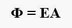
- If a constant field is at an angle Øfrom the normal to the surface, then the flux isgiven by:
- 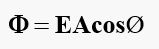
- Since EcosØ is the component of perpendicular to the area, we can rewrite the equation as:
- 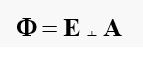
- Gauss’ law relates the net flux Φ of an electric field through a closed surface (a Gaussian surface) to the net charge qenc that is enclosed by that surface. It tells us that
- The total electric flux through a closed surface is equal to the total (net) electric charge inside the surface, divided by ε0.
- 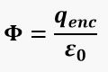
- (Gaus' Law)
- The constant ε_0is called the permittivity of free space and has the value 8.85 x 10^-12 C^2/N.m^2.
- Consider figure:
- 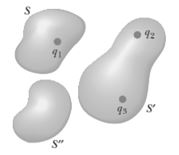
- The net electric flux through any closed surface depends only on the charge inside that surface. The net flux through surface S is q1/ε0, the net flux through surface S’ is (q2+q3)/ ε0, and the net flux through surface S” is zero.
Flux of an Uniform Electric Field
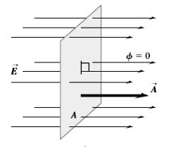 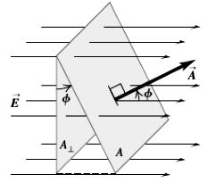
-
Applications of Gauss’ Law
Gauss’ Law is a powerful technique to calculate the electric field for situations exhibiting a high degree of symmetry.
A. Infinite Sheet of Charge
- Let’s calculate the electric field from an infinite sheet of charge, with a charge density of σ = qenc/A (measured in C/m2).
- Now consider a closed surface (which we will call a Gaussian surface) that extends through the sheet of charge. The sides, here assumed cylindrical, are chosen to be perpendicular to the sheet.
- So EAside = 0. The caps are parallel to the sheet, so EAleft = EAright since both vectors always point in the same direction. The total flux through the surface is thus:
- 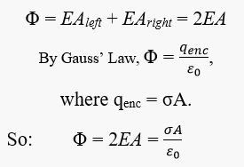
- 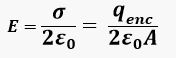
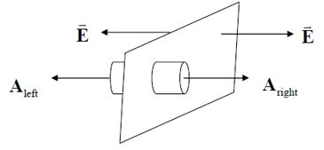 B. Infinite Line of Charge
- Let’s calculate the electric field a distance r from a line of electric charge infinite in extent with charge density λ=qenc/L (measured in C/m).
- Choose a Gaussian surface with cylindrical geometry, with top and bottom caps aligned such that their area vectors point in the same direction as the line of charge (and perpendicular to the electric field): EAtop = EAbottom = 0.
- So the total flux leaves through the sides:
- 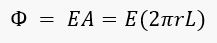
- since |E| is constant at a fixed radius. Thus:
- 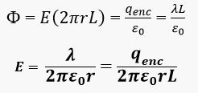
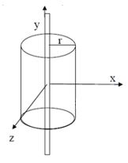 C. Spheres of Charge
- 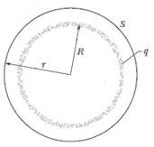
- a. Let’s calculate the electric field outside a spherically charged shell or conducting solid sphere.
- The radius of the sphere is R. A total charge qenc is spread uniformly on the surface, so the charge density per unit area is 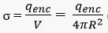 (measured in C/m3).
- For our Gaussian surface choose another sphere with radius r > R , centered on the charged sphere.
- Since |E| is constant at a fixed radius, the total flux through the surfce is:
- 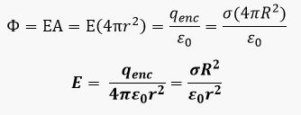
- The situation changes for the electric field inside a spherical shell or conducting solid sphere.
- For the electric field outside a solid sphere of total charge Q.
- For the electric field inside a solid sphere of total charge Q, then there is a net enclosed charge. First assume that the total charge of a solid sphere is spread uniformly throughout its volume. The volume charge density is therefore:
- The charge enclosed for r < R is:

- So Gauss’ Law tells us that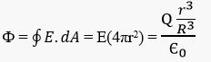
- 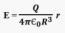
- Electric field of various symmetric charge distributions: The following table lists electric fields caused by several symmetric charge distributions. In the table, q, Q, λ, and σ refer to the magnitudes of the quantities.
1. Shell and Conducting Solid Sphere
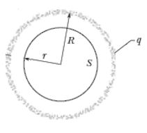 For r < R, then there is no net enclosed charge, and E = 0. No force acts on any point charge placed anywhere inside a charged shell (forces from all infinitesimal charges in the shell balances). Uniformly Charged Solid Insulating (Nonconducting) Sphere
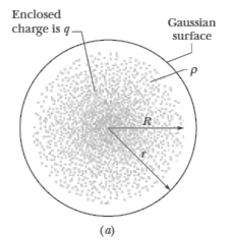 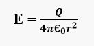
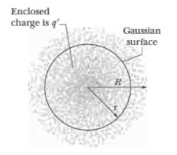 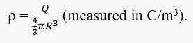 Charge Distribution Point in Electric Field Electric Field Magnitude Single point charge q Distance r from q 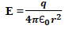 Infinite sheet of charge with uniform charge per unit area σ Any point 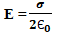 Infinite wire, charge per unit length λ Distance r from wire 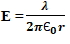 Charge q on surface of conducting sphere with radius R Outside sphere, r > R
Inside sphere, r < R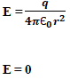 Solid insulating sphere with radius R, charge Q distributed uniformly throughout volume Outside sphere, r > R
Inside sphere, r < R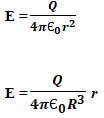 -
Sample Problems
- 1. A flat sheet of paper of area 0.250 m2 is oriented so that the normal to the sheet is at an angle of 600 to a uniform electric field of magnitude 14N/C. Find the magnitude of the electric flux through the sheet.
- 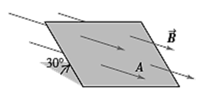
- 2. You measure an electric field of 1.25 x 106 N/C at a distance of 0.150 m from a point charge. There is no other source of electric field in the region other than this point charge. (a) What is the electric flux through the surface of a sphere that has this charge at its center and that has radius 0.150 m? (b) What is the magnitude of this charge?
- 3. The three small spheres shown in carry charges q1 = 4nC, q2 = -7.8nC, and q3 = 2.4nC. Find the net electric flux through each of the following closed surfaces shown in cross section in the figure: (a) S1; (b) S2; (c) S3; (d) S4; (e) S5.